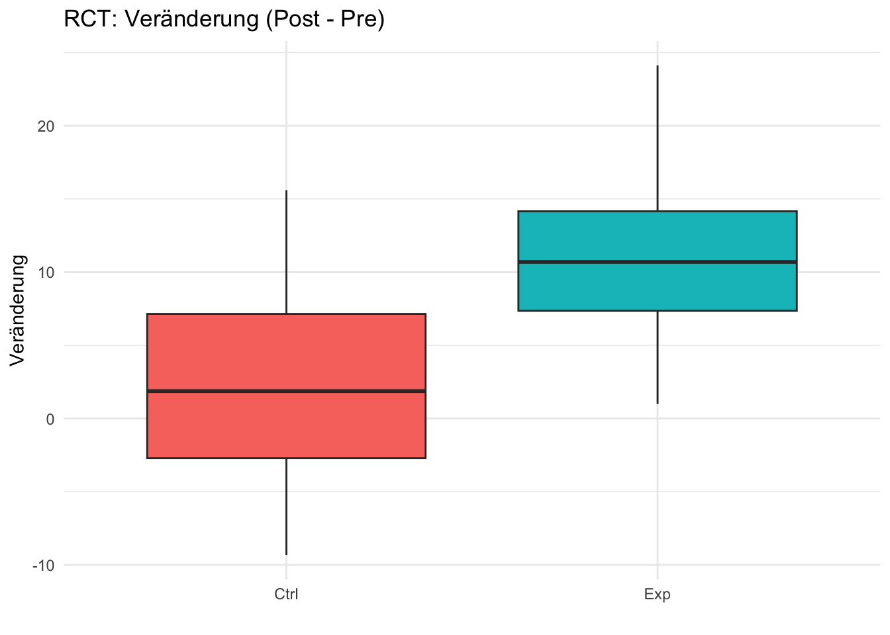
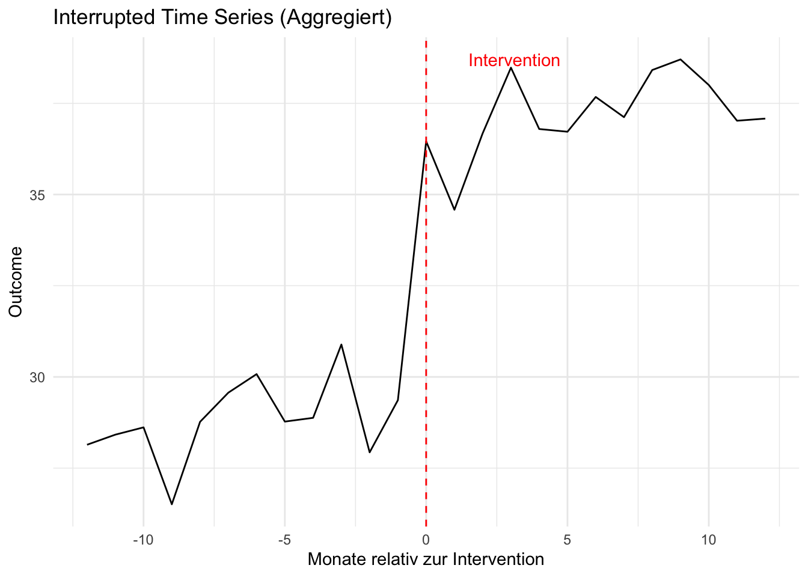

# Simulations‑Beispiele für typische Messschemata
set.seed(123)
library(dplyr)
library(tidyr)
library(ggplot2)
# 1) RCT Pre-Post (Boxplot der Veränderungen)
n_per_group <- 40
true_effect <- 8
maturation <- 3
rct <- tibble(
id = 1:(2*n_per_group),
group = rep(c("Exp","Ctrl"), each = n_per_group),
pre = rnorm(2*n_per_group, mean = 50, sd = 10)
) %>%
mutate(
post = pre + maturation + ifelse(group=="Exp", true_effect, 0) + rnorm(2*n_per_group, 0, 6),
change = post - pre
)
rct_plot <- ggplot(rct, aes(x = group, y = change, fill = group)) +
geom_boxplot() +
labs(title = "RCT: Veränderung (Post - Pre)", y = "Veränderung", x = "") +
theme_minimal() +
theme(legend.position = "none")
# 2) Mehrfache Follow-ups (Trajektorien, Gruppenmittelwerte)
ids <- 1:100
multi <- expand.grid(id = ids, time = c(0, 1, 3)) %>%
as_tibble() %>%
mutate(
group = ifelse(id <= 50, "Exp", "Ctrl"),
baseline = rnorm(n(), 50, 8),
# Effekt baut über Zeit auf: time = months since baseline
effect = ifelse(group=="Exp", 0.0 + 4 * (time>0) + 2 * (time>=3), 0),
y = baseline + effect + rnorm(n(), 0, 5)
)
multi_summary <- multi %>%
group_by(group, time) %>%
summarize(mean_y = mean(y), .groups = "drop")
multi_plot <- ggplot(multi_summary, aes(x = time, y = mean_y, color = group)) +
geom_line() + geom_point() +
labs(title = "Mehrfache Follow-ups: Gruppenmittelwerte", x = "Zeit (Monate)", y = "Mittelwert Outcome") +
theme_minimal()
# 3) Interrupted Time Series (Aggregierte Zeitreihe)
times <- seq(-12, 12) # Monate, intervention bei 0
its_df <- tibble(
time = times,
baseline_trend = 0.2 * time,
intervention_level = ifelse(time >= 0, 6, 0),
noise = rnorm(length(times), 0, 1)
) %>%
mutate(y = 30 + baseline_trend + intervention_level + noise)
its_plot <- ggplot(its_df, aes(x = time, y = y)) +
geom_line() +
geom_vline(xintercept = 0, linetype = "dashed", color = "red") +
annotate("text", x = 1.5, y = max(its_df$y), label = "Intervention", color = "red", hjust = 0) +
labs(title = "Interrupted Time Series (Aggregiert)", x = "Monate relativ zur Intervention", y = "Outcome") +
theme_minimal()
# Rückgabe: nützliche Plot‑Objekte für das Quarto‑Dokument
list(rct_plot = rct_plot, multi_plot = multi_plot, its_plot = its_plot)$rct_plot
$multi_plot
$its_plot